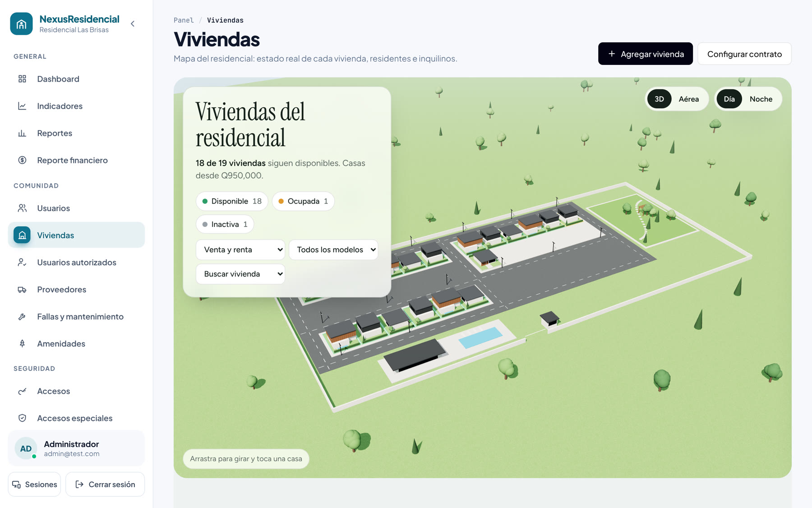
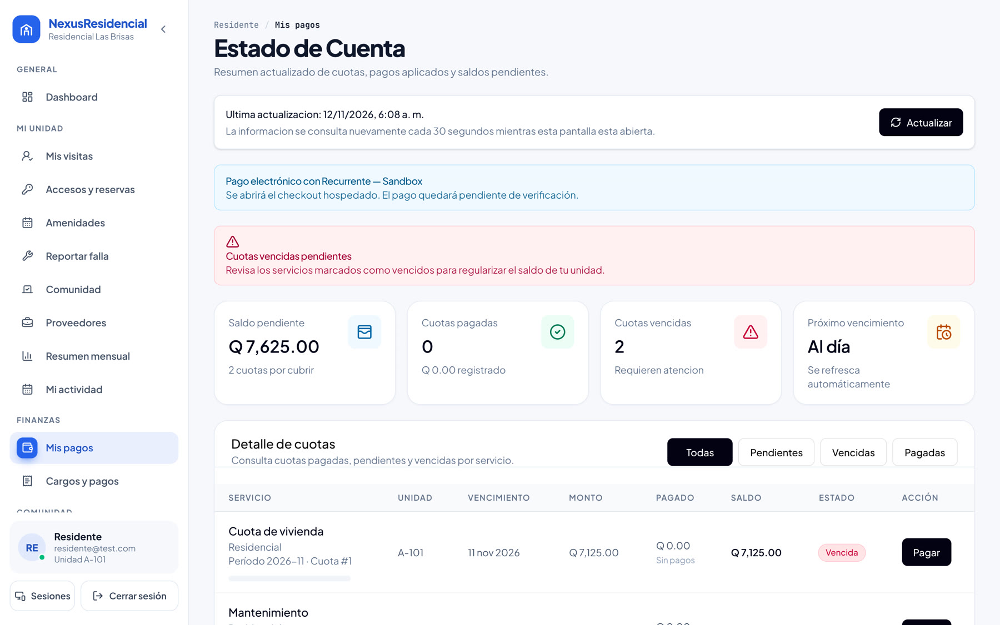

(Sin hablar: dejar correr el video de 21 segundos. Al terminar, avanzar.)
nexus-residencial.com

Ingeniería de Software 1 · Proyecto final
Visitas, cobros y convivencia de un residencial, en una sola app.
Denil Parada · Diana Sosa · Diego Reyes · Arodi Chávez · Emilio Chen · Luis Estrada
Buenos días. Somos NexusResidencial, un software para administrar residenciales: visitas con QR, cobros y la convivencia de toda la comunidad en una sola app. Somos seis: Diana, Diego, Arodi, Emilio, Luis y yo, Denil. (Pausa de 2 segundos.) Vuelvo a la pregunta del video.
Martes · 22:00 · garita
¿Quién entró?
En la Residencial Colonia Sion, nadie podía responder esa pregunta con certeza.
Martes, 10 de la noche. Un visitante entra al residencial y nadie anota bien su nombre. Al día siguiente un vecino pregunta: ¿quién entró anoche? ¿Lo autorizó alguien? En la Residencial Colonia Sion, donde hicimos nuestra investigación, nadie podía responder con certeza: la respuesta estaba en una libreta, en un chat de WhatsApp o en la memoria del guardia.
El hilo de hoy
De una libreta en garita a un sistema que se puede vender.
⚠
Problema
Qué vive el cliente hoy
◎
Valor
Qué gana y cuánto cuesta
▶
Solución
El sistema funcionando y probado con usuarios
⚙
Tecnología
Por qué así, y cómo escala
11 meses · Design Thinking + 11 sprints Scrum · 6 integrantes · un producto en producción.
Hoy les contamos cómo pasamos de esa libreta en garita a un software que ya está en producción y que se puede vender a cualquier residencial. Lo hicimos en 11 meses: primero Design Thinking con un cliente real y después 11 sprints de Scrum. Vamos a ver el problema, el valor para el negocio, la solución funcionando con pruebas reales de usuarios, y por qué la construimos así. Diana nos cuenta quién es el cliente.
El cliente
Le vendemos a la administración del residencial.
El problema lo viven cuatro personas.
🏢
Administrador
Finanzas, contratos, accesos y reportes de todo el complejo.
🏠
Residente
Paga cuotas, autoriza visitas, reserva amenidades.
🔑
Inquilino
Vive ahí, pero depende de permisos del propietario.
🛡
Guardia
Decide en segundos quién entra y quién sale.
Caso de estudio: Residencial Colonia Sion · entrevistas con los 4 perfiles (feb 2026)
Nuestro cliente directo es la administración del residencial: es quien contrata el sistema. Pero el problema lo viven cuatro perfiles: el administrador, que lleva finanzas, contratos y accesos; el residente, que paga cuotas, autoriza visitas y reserva amenidades; el inquilino, que vive ahí pero depende de los permisos del propietario; y el guardia, que controla físicamente quién entra. Lo comprobamos entrevistando a los cuatro perfiles en la Residencial Colonia Sion.
Cómo funciona hoy
Libreta, Excel, llamadas y WhatsApp.
🚪
Acceso inseguro
El guardia no puede verificar si el residente realmente autorizó al visitante.
💸
Finanzas opacas
El residente no sabe cuánto debe; el administrador calcula multas a mano.
🧾
Cero trazabilidad
¿Quién cambió este contrato? ¿Quién entró el martes? No hay registro.
Hoy estos residenciales funcionan con libreta, Excel, llamadas y WhatsApp. Eso genera tres problemas críticos. Primero, acceso inseguro: el guardia no tiene forma de verificar que el visitante fue realmente autorizado. Segundo, finanzas opacas: el residente no sabe en tiempo real cuánto debe ni por qué lo multaron, y el administrador calcula vencimientos y penalizaciones a mano. Tercero, cero trazabilidad: nadie puede responder quién modificó un contrato o quién entró el martes a las 10 de la noche.
Las consecuencias (lo que nos dijeron en las entrevistas)
“Me multaron y nunca me avisaron.”
Disputas por sanciones y cuotas vencidas que nadie detecta a tiempo.
Visitas sin autorización real
Retrasos en garita y personas que entran sin verificación.
Amenidades sin responsable
Reservas por mensaje, choques de horario y reglas poco claras.
El inquilino se entera tarde
La información no llega igual a todos, sobre todo a inquilinos.
Horas de trabajo administrativo perdidas cada semana y una sensación de desorden que afecta la convivencia y el valor de la propiedad.
Las consecuencias son concretas. Residentes que disputan sanciones porque nunca recibieron aviso. Visitantes que entran sin una autorización verificable. Amenidades usadas sin reserva y sin responsable. E inquilinos que se enteran tarde porque la información no les llega. Todo esto son horas de trabajo administrativo perdidas cada semana y una percepción de desorden que afecta la convivencia y el valor de la propiedad. Diego nos explica cuánto vale resolver esto.
Valor: antes vs después
| Proceso | Hoy | Con NexusResidencial | Métrica |
|---|
| Autorizar visita | Llamada + libreta (~3 min) | QR desde el celular; garita valida en segundos | ~1.5 h/día de garita ahorradas* |
| Cobros y multas | Cálculo manual en Excel (~8 h/mes) | Cuotas, recargos y recordatorios automáticos | 0 h manuales · morosidad mes a mes |
| Trazabilidad | Sin registro confiable | Cada ingreso, pago y cambio auditado | 100 % de accesos registrados |
| Amenidades | Reservas por mensaje | Calendario con validación de choques | 0 reservas duplicadas |
*Supuestos: residencial de ~150 casas, ~40 visitas diarias, 1 administrador; 3 min por visita hoy vs <1 min con QR.
¿Qué cambia para el residencial? Comparemos. Autorizar una visita hoy es una llamada y una anotación en libreta, unos 3 minutos; con NexusResidencial el residente genera un QR y garita lo valida en segundos. Con 40 visitas diarias en un residencial de 150 casas, eso es cerca de hora y media diaria de garita. Los cobros: el administrador dedica unas 8 horas al mes a calcular multas; ahora son automáticas y la morosidad se ve mes a mes. Y la trazabilidad pasa de nada a 100 % de accesos registrados. Estos números son estimaciones con los supuestos que ven abajo.
Modelo de negocio
Q10 por vivienda al mes.
53–56 % de margen.
Q0
ingreso/mes · 150 casas
Correo y avisos push: gratis · Pagos con Recurrente: 4.5 % + Q2 por cobro, sin mensualidad · Sandbox: Q0.
| Alternativa | Precio |
|---|
| Excel + WhatsApp | Gratis, sin control |
| Hestia (GT) | Gratis hasta 15 unidades |
| TuCondominio | USD 20/mes hasta 50 u. |
| LAYERS | ~USD 1.15 por unidad |
| NexusResidencial | ~USD 1.30 por unidad · QR, pagos en Q, 3D |
Desarrollo: Q1,320,000 (6 × Q20,000 × 11 meses). Con 60 clientes se recupera en ~2 años.
El modelo es suscripción: Q10 por vivienda al mes, más Q2,500 de instalación. Un residencial de 150 casas paga Q1,500 al mes; operar su copia en Railway cuesta unos Q155, el correo y los avisos push son gratis, y con soporte el margen queda entre 53 y 56 por ciento. Las comisiones de Recurrente, 4.5 % más Q2, las paga el residencial sobre lo que cobra en línea; el modo de pruebas no cuesta nada. Estamos en el rango del mercado, alrededor de un dólar con treinta por unidad, pero con QR de garita, pagos en quetzales y mapa 3D. Beneficia a la administración, que deja el trabajo manual; a residentes e inquilinos, que ganan transparencia; y a garita. Nuestro desarrollo costó Q1,320,000; con 60 clientes se recupera en unos dos años. Arodi les muestra el sistema.
Demo · 1 · el residente autoriza una visita
1
“Autorizar una visita” es la acción principal del panel.
2
Nombre, DPI o placa, fecha y hora dentro del horario del residencial.
3
Se genera un QR de un solo uso que se comparte por WhatsApp.
(Demo en vivo; si falla internet, usar estas capturas.) Entro como residente. Lo primero que ve es su saldo, sus visitas y el botón principal: Autorizar una visita. Lleno el nombre del visitante, su DPI o placa, la fecha y la hora. El sistema valida que esté dentro del horario del residencial y genera un QR de un solo uso, que el residente comparte por WhatsApp. El QR no lleva datos personales: solo un código aleatorio.
Demo · 2 · garita valida en segundos
/guardia/control

El guardia escanea con la cámara.
Ve nombre, DPI, placa, casa y horario autorizados, y el ingreso queda registrado.
QR expirado → rechazadoQR ya usado → rechazadoFuera de horario → acceso de emergencia aprobado por admin
Ahora soy el guardia. Escaneo el QR con la cámara del celular o de la computadora. En un segundo veo nombre, DPI, placa, casa y horario autorizados, y el ingreso queda registrado con mi usuario. Si el QR ya se usó, si expiró o si la visita fue cancelada, se rechaza. Si alguien necesita entrar fuera de horario, el residente pide un acceso de emergencia y la administración lo aprueba. Y cuando el visitante se va, el guardia registra la salida.
Demo · 3 · cobros claros
/residente/pagos

El residente sabe cuánto debe y por qué.
Cuotas generadas el día 1, recargos automáticos, recordatorios y pago en línea con Recurrente.
Comprobante PDF con la marca del residencial.
Del lado financiero, el residente ve cada cuota, su vencimiento y su estado. Las cuotas se generan solas el día uno, los recargos se aplican automáticamente y le llegan recordatorios por correo y al celular. Puede pagar en línea con Recurrente, una pasarela guatemalteca, y recibe su comprobante en PDF con la marca del residencial. Hoy está en modo de pruebas; para cobrar dinero real solo falta la cuenta comercial del cliente.
Demo · 4 · la administración ve todo
/admin/indicadores

Roles propios (Contador, Junta)Votaciones · 1 voto por casaFallas con fotoImportar desde ExcelApp instalable + avisos push
Y la administración ve todo el residencial: un mapa 3D con el estado real de cada casa, disponible, ocupada o inactiva, e indicadores de morosidad mes a mes, visitas por día y ocupación de amenidades. Como es un producto para vender, cada residencial puede crear sus propios roles, como un contador que solo ve pagos; hacer votaciones con un voto por casa; recibir reportes de fallas con foto; importar sus viviendas desde Excel el primer día; y sus usuarios instalan la app en el celular y reciben avisos. Pero que funcione no significa que sea fácil de usar. Emilio les cuenta cómo lo probamos.
Pruebas con usuarios · Neurolab UVG · 15 oct 2026
No preguntamos si les gustaba. Medimos dónde miraban.
6 voluntarios · 3 roles · seguimiento ocular · sensor de estrés GSR · cuestionario SUS.
En octubre llevamos el sistema al Neurolab de la UVG. Seis voluntarios, dos por rol: administrador, guardia y residente. No les preguntamos si les gustaba: medimos con seguimiento ocular dónde miraban, con un sensor GSR cuándo se estresaban, y al final llenaron el cuestionario de usabilidad SUS. Aquí ven el mapa de calor de un residente y su señal de estrés.
Resultados
0%
tareas completadas (17 de 18)
0
SUS promedio (umbral aceptable 68–70)
0
SUS del administrador: el mejor rol
Resultados: se completó el 94 % de las tareas y el SUS promedio fue 69.6, justo en el umbral de usabilidad aceptable. El administrador tuvo el mejor resultado, 77.5. El residente fue el que más batalló: uno de ellos tardó casi el doble y no logró pre-autorizar una visita sin ayuda. Curiosamente, en la encuesta todos decían que era fácil: el laboratorio nos mostró lo que la encuesta no.
Hallazgos → cambios en el producto
| Hallazgo del Neurolab | Qué cambiamos | Estado |
|---|
| H2 · La pre-autorización de visitas era difícil de encontrar | Botón principal “Autorizar una visita” en el panel del residente e inquilino | Atendido |
| H3 · El filtro del historial del guardia era pequeño y lejano | Filtros grandes de fecha, estado y búsqueda justo sobre la tabla | Atendido |
| H5 · Confirmaciones poco visibles | Ventanas claras de éxito, error y confirmación en toda la app | Atendido |
| H1/H4 · Menú y jerarquía del residente | Menú por secciones y accesos directos desde el panel | Parcial |
| UX-05 · Modo oscuro (pedido por usuarios) | En el backlog | Pendiente |
Cada hallazgo se volvió un cambio. El más importante, la pre-autorización difícil de encontrar: ahora es el botón principal del panel del residente y del inquilino. El filtro del historial del guardia ahora es grande y está justo sobre la tabla. Las confirmaciones se rediseñaron en toda la aplicación. El menú y la jerarquía del residente mejoraron parcialmente, y el modo oscuro que pidieron los usuarios quedó en el backlog. El siguiente paso es repetir la prueba para medir cuánto sube el SUS del residente.
Calidad del proceso
0
puntos por sprint en promedio
0
pruebas automáticas pasando
Revisiones técnicas formales, pruebas de regresión en cada cambio y un recorrido completo de los 4 roles antes de cada entrega.
Y para que cada cambio no rompa lo anterior: 11 sprints con un promedio de 51 puntos, más de 1,600 pruebas automáticas que corren en backend y frontend, revisiones técnicas formales y, antes de esta entrega, recorrimos las 67 pantallas de los cuatro roles. Luis nos explica con qué está construido y por qué.
Por qué esta tecnología
| Necesidad | Elegimos | En vez de | Porque |
|---|
| Interfaz en celular y PC | React + TypeScript (app instalable) | Angular, apps nativas | Un solo lenguaje; sin tiendas de apps |
| Lógica del negocio | Node.js + Express | Django, Spring | El equipo ya lo dominaba |
| Pagos que no fallan a medias | MySQL (transacciones) | MongoDB | Casa → contrato → cuota → pago |
| Operar barato | Railway | AWS, VPS | ~USD 10–25/mes por cliente, deploy automático |
| Cobrar en quetzales | Recurrente | Stripe, PayPal | Guatemalteco, sin mensualidad |
Cada tecnología responde a un requisito. La interfaz es React con TypeScript, instalable en el celular sin pasar por tiendas de apps. El servidor es Node.js con Express: el mismo lenguaje en todo el sistema, que el equipo ya dominaba, en lugar de Django o Spring. La base es MySQL porque los pagos necesitan transacciones: una cuota no puede quedar pagada a medias, algo que MongoDB no garantiza tan naturalmente. Desplegamos en Railway porque cuesta entre 10 y 25 dólares al mes por cliente y publica solo cada cambio, frente a operar AWS o un servidor propio. Y cobramos con Recurrente porque es guatemalteca, cobra en quetzales y no tiene mensualidad; Stripe no opera comercios en Guatemala.
Seguridad y escala
Datos sensibles protegidos
Contraseñas con bcrypt · sesiones firmadas y revocables · cierre por inactividad · límite de intentos · consultas parametrizadas · auditoría de cada cambio · tarjetas nunca pasan por nuestro servidor · una base de datos por residencial.
Prueba de carga real
0
peticiones/s con sesión, 0 errores
0
usuarios activos por instancia
Un residencial de 300 casas usa menos del 10 %.
Sobre seguridad: las contraseñas se guardan con bcrypt; las sesiones son tokens firmados que se pueden cerrar desde cualquier dispositivo y se cierran solas por inactividad; hay límite de intentos de inicio de sesión; todas las consultas son parametrizadas contra inyección SQL; cada cambio sensible queda auditado; los datos de tarjeta se escriben en la página de Recurrente, nunca en la nuestra; y cada residencial tiene su propia base de datos. En escala, hicimos una prueba de carga: una sola instancia atendió 280 peticiones por segundo con sesión y cero errores, del orden de 3,000 usuarios activos a la vez. Un residencial de 300 casas usa menos del 10 % de eso.
Martes · 22:00 · garita
Ahora la respuesta tiene nombre, hora y guardia.
NexusResidencial: probado con usuarios, en producción y listo para el siguiente residencial.
nexus-residencial.com
Empezamos con una pregunta: martes, 10 de la noche, ¿quién entró? Hoy esa respuesta tiene nombre, hora y el guardia que lo dejó pasar. Y además el residente sabe cuánto debe, la administración ve su residencial completo y el producto está en producción, probado con usuarios reales y listo para venderse al siguiente residencial. Gracias. ¿Preguntas?
¡Gracias!
Preguntas
Denil Parada · Diana Sosa · Diego Reyes · Arodi Chávez · Emilio Chen · Luis Estrada
Preguntas. (Ver respuestas preparadas en el documento técnico, sección 12.)